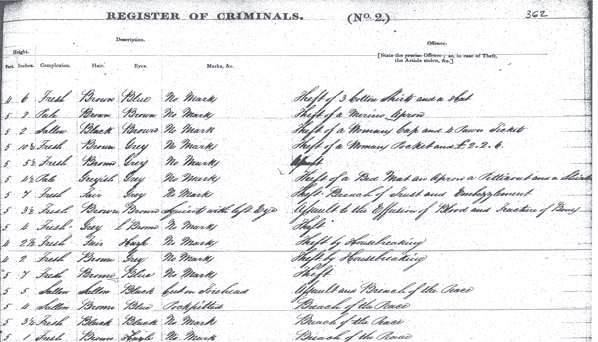
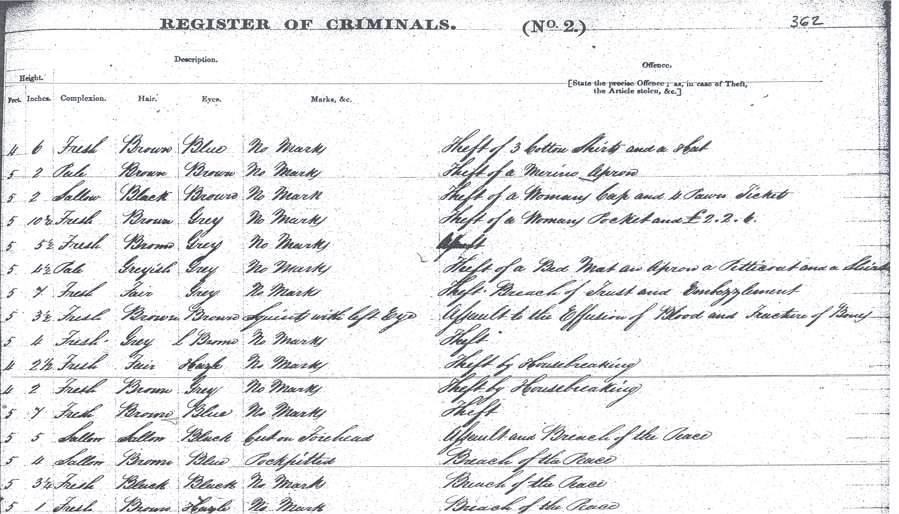

The fist case-study deals with the admission records from the Paisley prison, an institution located in a village near Glasgow (The Scottish National Archives). Kept in the National Archives of Scotland, these registers provide individual information on those prisoners who were admitted into this institution between 1841 and 1883.
For an illustration on how this type of source looks like, see the register included below of John Hearn, a 12-year old convicted in 1873 for stealing 11 pieces of leather who was sentenced to one month of hard labour. Interestingly, prison records provide info on both males and females, a feature that is relatively uncommon for this period (when most of the height data come from military conscripts).
The previous picture comes from the H.M. Prison Wandsworth, near London. The Paisley records are not as fancy. Figure 1 below shows a sample of the original source. While each column records different pieces of information (case number, date of admission, name, etc.), each row refers to each inmate in the data set. The data set was originally collected by Hamish Maxwell-Stewart, James Bradley and Tamsin O’Connor who systematically sample every fourth double page of all registers, resulting in a total of 13,879 observations. For practical reasons, we will rely on a subset of the full data set, containing a thousand prisoners. This source presents information in a very structured form, that can be easily transferred to a digital version.
 


As well as the case number, the source reports name, sex, age, place (and country) of birth, place of residence, height, weight, occupation and literacy level, etc. As well demographic and socio-economic information, the registers also include the offence committed and the sentence they were punished with (see image below). The education, occupations, and types of crimes (mostly petty crimes) suggest that these prisoners were drawn from the low working classes, which constituted a large proportion of the full population at the time. Comparing the prisoners’ registers with those of the 1861 population census also confirms that they were “ordinary if vulnerable workers” [Meredith and Oxley 2015, p. 209].
Inputing the raw data into an Excel spreadsheet results in Figure 2 below. Each column, known as field or variable presents a piece of information. As well as the case number (casen) and the date of admission (information that is split in two fields: month and year), the source records several pieces of information about these inmates, such name and surname, sex, age, place of birth (born) and country of birth (countryb), the place where the were living before being imprisoned (reside), height (in feet and inches) and weight, occupation (occup) and whether they were employed or not. It also reports their literacy, the marks that were visible in their bodies, the offence they committed and the sentence they received. While the first row displays the name of these variables, the remaining rows are devoted to each individual in the dataset.

Who were these prisoners? Where they were coming from? Did prisoners’ occupations differ significantly from the rest of the population? What about literacy rates? Did men and women commit different crimes? Did judges treat everyone equally or did particular groups suffer harsher sentences? What explains the variation in stature and weights observed across prisoners? How did theses dimensions change during the period? The range of historical questions that this source can address is almost endless. Sarah Horrell, David Meredith and Deborah Oxley have relied on this information to significantly contribute to our understanding of 19th-century British society, especially regarding the biological living standards of the working classes and the gender dynamics that drove the allocation of resources within these families [Horrell and Oxley (2013); Meredith and Oxley (2015)]. We strongly encourage reading those pieces to get to know more about the source and its possibilities. Bear in mind that, for practical reasons, we will rely on a subset of the full data set, containing a thousand prisoners.
This type of source allows exploring many historical questions:
How did the biological living standard of living change during the period?
What explains the variation in stature observed across prisoners?
Did prisoners’ occupations differ significantly from the rest of the population?
What about literacy rates?
Did men and women commit different crimes?
Did judges treat everyone equally or did particular groups suffer harsher sentences?
…
Sarah Horrell, David Meredith and Deborah Oxley have relied on this information to significantly contribute to our understanding of 19th-century British society, especially regarding the living standards of the working classes and gender dynamics that drove the allocation of resources within these families [Horrell and Oxley (2013); Meredith and Oxley (2015)]. In a seminal article, Sarah Horrell and Deborah Oxley had previously addressed these issues using similar registers from the Wandsworth prison, near London [Horrell, Meredith, and Oxley 2009]. Those who are interested in knowing more about the source and its possibilities are encouraged to read those articles.